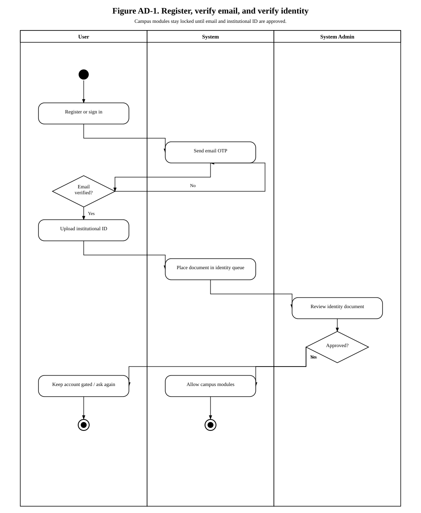
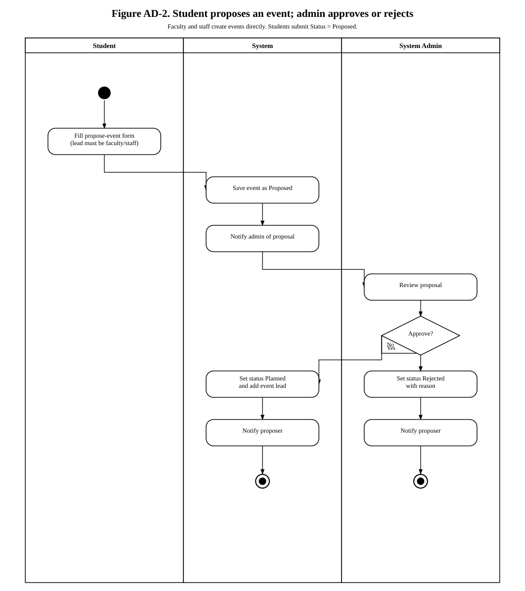
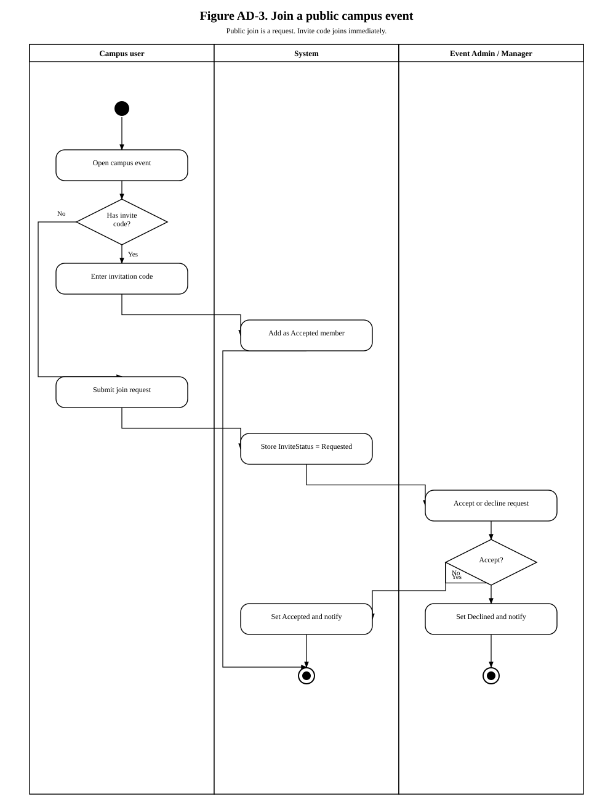
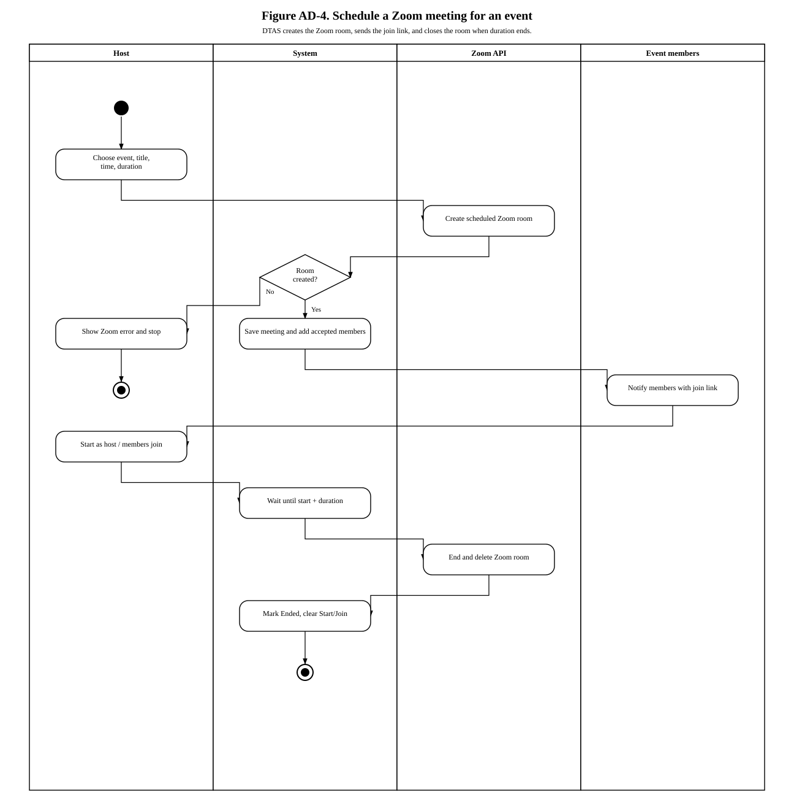
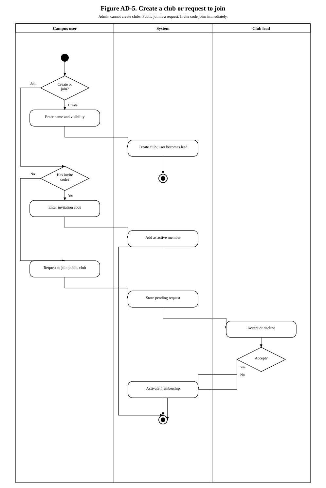
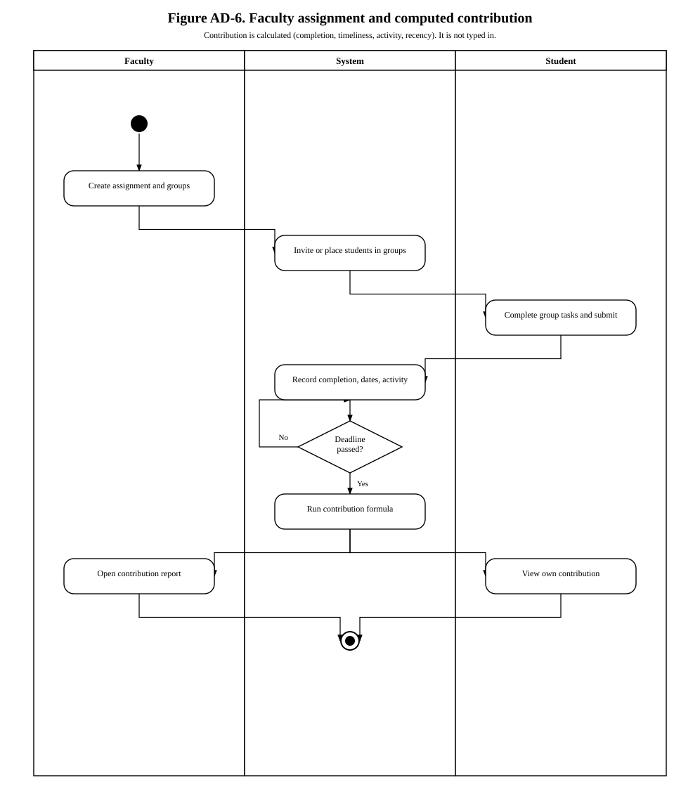

Black-and-white UML activity diagrams for the Digital Transparency and Accountability System. PNG, SVG, and draw.io files are in this folder. Open this file in a browser and print to PDF if you need a report copy.
Faculty and staff create events. Students propose events. System Admin does not create events or clubs.
Public club and event join is a request. An invite code joins immediately.
The Zoom room closes when start time plus duration ends.
Contribution percentage is computed. It is not entered by hand.

Figure AD-1. Register, email OTP, and institutional ID review.

Figure AD-2. Student proposes an event. Admin approves or rejects.

Figure AD-3. Join a public event by request or invitation code.

Figure AD-4. Schedule a Zoom meeting, send the join link, close the room after duration.

Figure AD-5. Create a club or request to join. Admin cannot create clubs.

Figure AD-6. Faculty assignment. Contribution is computed, not typed in.